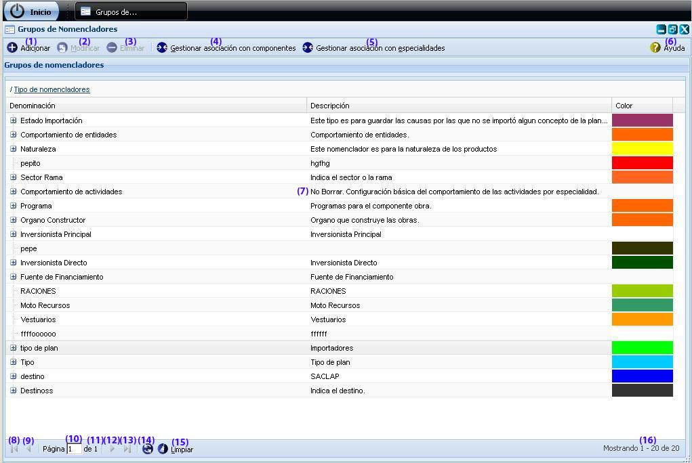
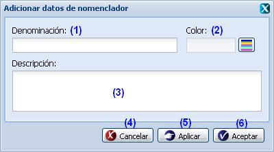
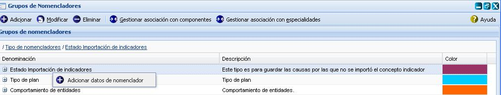
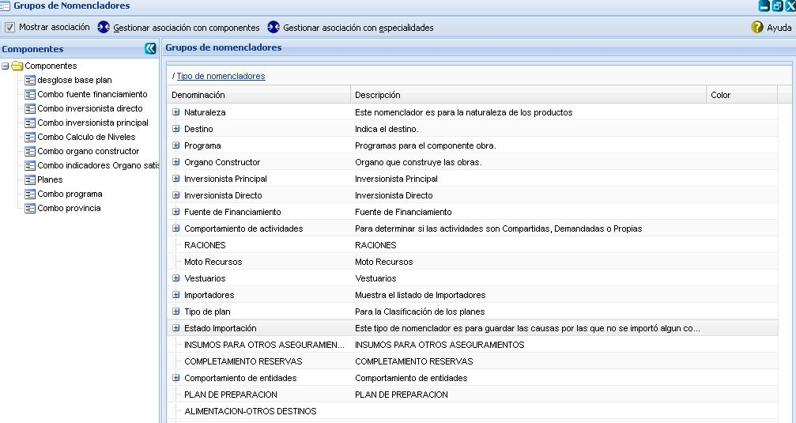
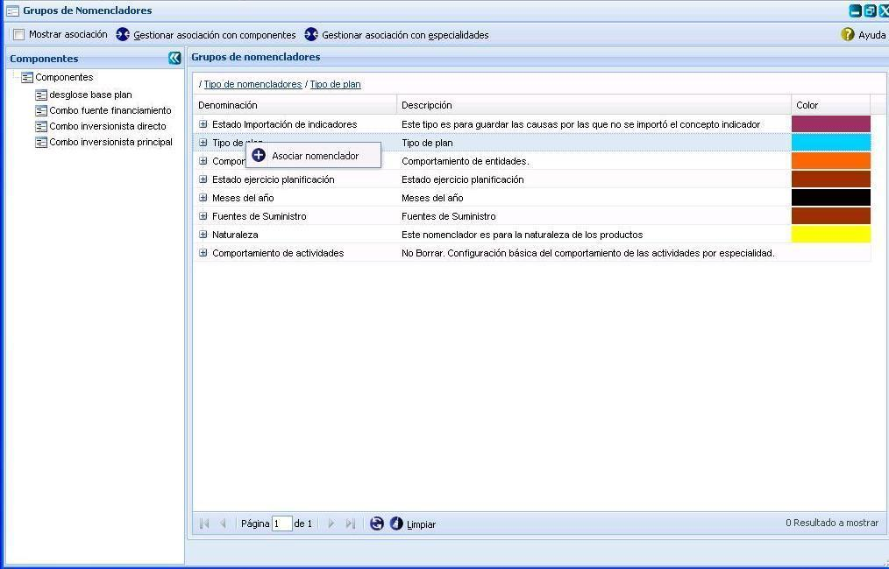
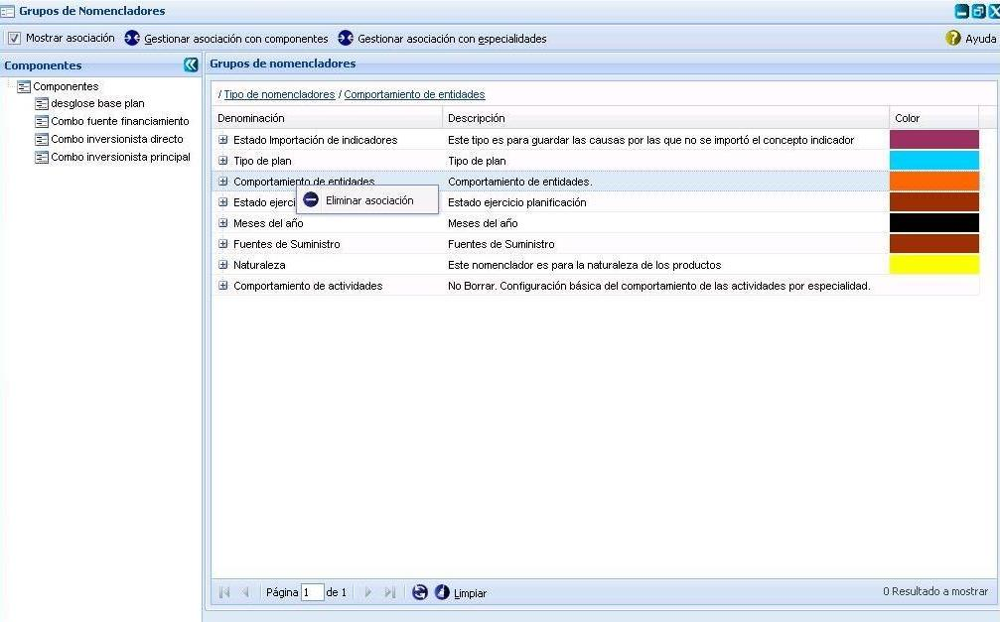
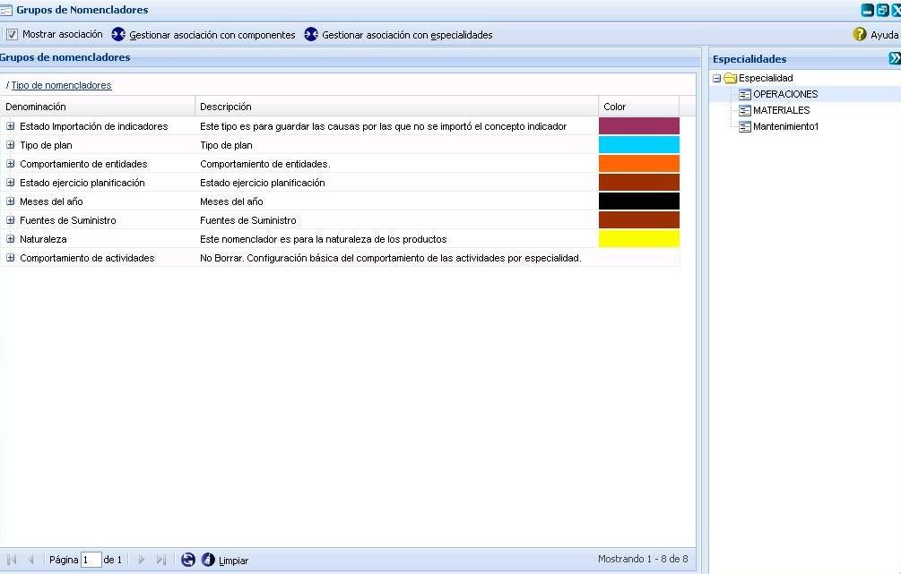
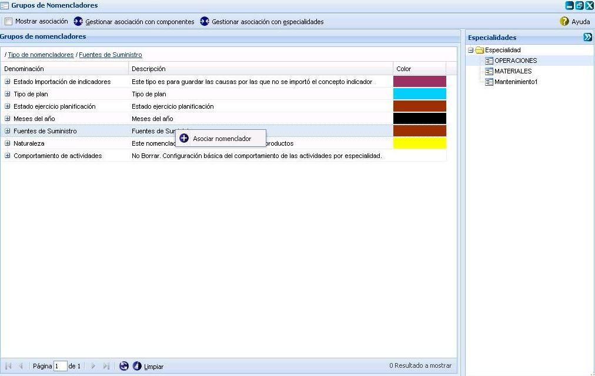
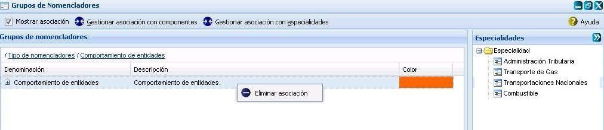

--Grupos de nomencladores--
En esta funcionalidad se gestionan los grupos de nomencladores con los que trabajará el sistema, los cuales podrán ser asociados con los Componentes o las Especialidades, a la misma solo tienen permiso aquellos usuarios que presenten categoría rector. Para acceder a esta funcionalidad se selecciona la opción: Inicio/Planificación material/Configuraciones/Grupos de nomencladores. Una vez seleccionada la funcionalidad, aparecerá en pantalla la interfaz de la misma, ver figura 1.

Figura 1. Interfaz y acciones de la funcionalidad Grupos de nomencladores.
Las diferentes opciones que conforman la figura anterior permiten:
-
Adicionar grupo de nomenclador, ver Adicionar grupo de nomenclador, esta acción permite adicionar grupos de nomencladores, para ejecutarla el sistema le mostrará la interfaz “Adicionar datos de nomenclador”, cuando se presione el botón Aceptar o Aplicar de la interfaz el sistema le mostrará un mensaje de información notificando que se adicionó el grupo de nomenclador. Se puede acceder a esta funcionalidad con las teclas (Alt + I).
-
Modificar un grupo de nomenclador previamente seleccionado en el sistema. Una vez seleccionado el nomenclador y presionada la opción Modificar de la interfaz, el sistema le mostrará la interfaz con los datos cargados, posibilitando que se modifiquen los datos que se requieran. Se puede acceder a esta funcionalidad seleccionando el grupo de nomenclador y oprimiendo las teclas (Alt + M). Si al modificar el nomenclador se introduce uno que ya existe, el sistema mostrará un mensaje de error. El procedimiento del llenado de los datos y selección de los botones de la interfaz Modificar nomenclador es muy similar al descrito en la funcionalidad de Adicionar grupos de nomencladores.
-
Eliminar un grupo de nomenclador previamente seleccionado en el listado. Esta acción permite eliminar el nomenclador deseado, una vez seleccionado se procede a seleccionar la opción Eliminar de la interfaz, automáticamente se mostrará un mensaje de confirmación, que se puede Aceptar o Cancelar según sea el caso, de presionar la opción Aceptar el sistema le mostrará un mensaje de información sobre el éxito de la operación realizada, quedando eliminado el nomenclador seleccionado, si cancela el mensaje de confirmación, el sistema permanece en la interfaz principal y no elimina el nomenclador. Se puede realizar esta operación seleccionando un dato del nomenclador en el listado y oprimiendo la tecla (Delete). Si se selecciona un grupo de nomenclador que está siendo usado, el sistema mostrará un mensaje de error. Para ejecutar dicha funcionalidad se debe tener en cuenta la siguiente validación:
Validaciones:
- No se puede eliminar un nomenclador que este asociado con un componente o con una especialidad si presiona el botón Eliminar y el nomenclador está asociado el sistema le mostrará el siguiente mensaje de información: “El nomenclador no se puede eliminar debido a que está asociado.”
- Gestionar asociación con componentes, ver Gestionar asociación con componentes. Se puede acceder a esta funcionalidad seleccionando el grupo de nomenclador y oprimiendo las teclas (Ctrl + Alt + G).
- Gestionar asociación con especialidades, ver Gestionar asociación con especialidades. Se puede acceder a esta funcionalidad seleccionando el grupo de nomenclador y oprimiendo las teclas (Ctrl + Alt + E).
- Mostrar ayuda de la funcionalidad. Se puede realizar esta operación seleccionando la combinación de teclas (Alt + H).
- Lista de grupos de nomencladores.
- Ir a la primera página, mostrando los primeros grupos de nomencladores.
- Ir a la página anterior.
- Muestra el número de la página donde se encuentra, se puede introducir el número.
- Muestra el número máximo de páginas.
- Ir a la siguiente página.
- Ir a la última página.
- Actualizar el listado de grupo de nomencladores.
- Limpiar filtro(s). Esta acción limpiará todos los criterios de búsqueda, deshabilitando los filtros realizados. Se puede realizar esta operación seleccionando la combinación de teclas (Alt + L).
- Mostrar la cantidad de resultados encontrados.
Adicionar grupos de nomencladores
Para ejecutar dicha opción, se procede a presionar el botón Adicionar que aparece en la interfaz principal, ver Figura 1. Inmediatamente aparecerá una ventana donde se podrán especificar los datos relacionados con el Grupo de nomenclador que se desea adicionar, ver figura 2.

Figura 2. Interfaz Adicionar grupo de nomenclador.
Las opciones de la figura anterior permiten:
- Introducir la denominación del grupo de nomenclador que desea insertar.
- Seleccionar el color que presentará el grupo de nomenclador a insertar.
- Introducir una breve descripción del grupo de nomenclador. Este dato no es obligatorio.
- Cancelar las acciones y salir de la interfaz sin guardar los datos.
- Guardar los datos y limpiar los campos de la interfaz, permitiendo adicionar otro grupo de nomenclador.
- Adicionar los datos del grupo de nomenclador al listado y cerrar la interfaz.
Validación de los campos:
- Los campos Denominación y Color son obligatorios, en caso de dejar estos campos vacíos se mostrará un mensaje de error en el mismo campo, si se presionar el botón Aceptar o Aplicar de la interfaz el sistema mostrará un mensaje de información notificando que existen campos obligatorios en blanco.
- No se permite adicionar un Grupo de Nomencladores con una misma denominación. Si esto ocurre el sistema debe mostrar un mensaje de error.
- El campo Denominación acepta caracteres alfa-numéricos hasta 255 caracteres, si se introduce algún carácter especial se debe mostrar un mensaje en el mismo campo, si sobrepasa la cantidad establecida, se debe mostrar un mensaje en el mismo campo.
- El campo Descripción acepta caracteres alfa-numéricos y caracteres especiales sin límites, puede ser vacío.
Nota: Si desea adicionar un nomenclador al grupo de nomenclador insertado, procede a seleccionar el grupo de nomenclador al cual le desea insertar un nuevo nomenclador y selecciona mediante clic secundario (derecho) encima de dicho nomenclador, la opción
Adicionar datos de nomenclador, ver figura 3. Una vez presionada dicha opción el sistema le mostrará la interfaz Adicionar datos de nomenclador, ver figura 2. El procedimiento del llenado de los datos y selección de los botones de la interfaz es muy similar al descrito en la funcionalidad de
Adicionar grupos de nomencladores.

Figura 3. Menú de opciones que se puede realizar sobre un Grupo de nomenclador.
Gestionar asociación con componentes
Para acceder a esta funcionalidad deberá optar por la opción Gestionar asociación con componentes, ver figura 1. Inmediatamente la interfaz se dividirá en dos paneles (izquierdo y derecho) donde el panel izquierdo constará con los componentes y el derecho con los nomencladores asociados al componente seleccionado, si se encuentra marcado el campo Mostrar asociación, ver figura 4.

Figura 4. Interfaz Gestionar asociación con componentes.
Si se desea visualizar el panel izquierdo, el cual posee los Componentes lo puede hacer presionando el botón “” que aparece en la esquina superior derecha del panel. Es válido aclarar que para seleccionar otro Componente debe visualizar nuevamente el panel izquierdo mediante el botón “” que se encuentra a la esquina superior izquierda de la interfaz.
Nota: para volver a la interfaz principal Grupos de nomencladores deberá volver a presionar la opción Gestionar asociación con componentes.
Asociar nomenclador
Para asociar un Grupo de nomencladores a un Componente, lo primero que debe hacer es desmarcar el campo de selección Mostrar asociación, posteriormente debe seleccionar el Componente del panel izquierdo y seguidamente presionar clic secundario (derecho) encima del Grupo de nomencladores que desea asociar para seleccionar la opción Asociar nomenclador, ver figura 5. Una vez seleccionada esta opción el sistema le mostrará un mensaje de información sobre el éxito de la operación realizada, acepte el mensaje y se eliminará el nomenclador asociado de la lista de nomencladores que no están asociados.

Figura 5. Opción Asociar nomenclador con componente.
Eliminar asociación
Para eliminar la asociación de un Grupo de nomencladores a un Componente, lo primero que debe hacer es marcar el campo de selección Mostrar asociación, posteriormente debe seleccionar el Componente del panel izquierdo y seguidamente presionar clic secundario (derecho) encima del Grupo de nomencladores que desea desasociar para seleccionar la opción Eliminar asociación, ver figura 6. Una vez selecciona esta opción el sistema le mostrará un mensaje de confirmación de la operación realizada, acepte el mensaje de confirmación y el sistema le mostrará un mensaje de información sobre el éxito de la operación realizada, acepte el mensaje y se eliminará el nomenclador asociado de la lista de nomencladores que están asociados al Componente seleccionado. De cancelar el mensaje de confirmación el sistema permanece en la interfaz principal y no desasociará el grupo de nomencladores seleccionado.

Figura 6. Opción eliminar asociación con componente.
Gestionar asociación con especialidades
Para acceder a esta funcionalidad deberá optar por la opción Gestionar asociación con especialidades que se encuentra en la barra de acciones de la interfaz que aparece representada en la figura 1. Inmediatamente la interfaz se dividirá en dos paneles (izquierdo y derecho) donde el panel izquierdo constará con los Grupos de Nomencladores asociados (si el campo Mostrar asociación está marcado) y el derecho con las Especialidades al que está asociado el mismo, ver figura 7.

Figura 7. Interfaz Gestionar asociación con especialidad.
Si usted no desea visualizar el panel derecho, el cual posee las Especialidades lo puede hacer presionando el botón “” que aparece en la esquina superior derecha del panel. Es válido aclarar que para seleccionar otra Especialidad debe visualizar nuevamente el panel derecho mediante el botón “” que se encuentra a la esquina superior derecha de la interfaz.
Otro aspecto importante a tener en cuenta es que para volver a la interfaz principal Grupos de Nomencladores deberá volver a presionar la opción Gestionar asociación con especialidades.
Asociar nomenclador
Para asociar un Grupo de nomencladores a una Especialidad, lo primero que debe hacer es desmarcar el campo de selección Mostrar asociación, posteriormente debe seleccionar la Especialidad del panel derecho y seguidamente presionar clic secundario (derecho) encima del Grupo de nomencladores que desea asociar para seleccionar la opción Asociar nomenclador, ver figura 8. Una vez seleccionada esta opción el sistema le mostrará un mensaje de información sobre el éxito de la operación realizada, acepte el mensaje y se eliminará el nomenclador asociado de la lista de nomencladores que no están asociados.

Figura 8. Opción Asociar nomenclador con especialidad.
Eliminar asociación
Para eliminar la asociación de un Grupo de nomencladores a una Especialidad, lo primero que debe hacer es marcar el campo de selección Mostrar asociación, posteriormente debe seleccionar la Especialidad del panel derecho y seguidamente presionar clic secundario (derecho) encima del Grupo de nomencladores que desea desasociar para seleccionar la opción Eliminar asociación, ver figura 9. Una vez seleccionada esta opción el sistema le mostrará un mensaje de confirmación de la operación realizada, acepte el mensaje de confirmación y el sistema le mostrará un mensaje de información sobre el éxito de la operación realizada, acepte el mensaje y se eliminará el nomenclador asociado de la lista de nomencladores que están asociados a la Especialidad seleccionada. De cancelar el mensaje de confirmación el sistema permanece en la interfaz principal y no desasociará el grupo de nomencladores seleccionado.

Figura 9. Opción eliminar asociación con especialidad.
Buscar nomenclador
Esta funcionalidad permite efectuar una búsqueda mediante filtrado en las columnas. Para efectuar la misma debe estar en la interfaz principal, ver figura 1, una vez que accedió a esta se presiona clic en el botón “” que aparece en la parte derecha de cada columna. Luego de presionado el mismo, se procede a desplegar la columna y se ofrece la posibilidad de realizar búsqueda mediante filtrado. Se introduce o selecciona el criterio de filtrado según la información que brinde la columna seleccionada. Inmediatamente se presiona la tecla Enter y el sistema le mostrará en la interfaz los nomencladores según el criterio de filtrado seleccionado. En caso de que no existan nomencladores a mostrar para el criterio de filtrado seleccionado el sistema lo notificará mostrando el mensaje de información: “No existen datos que se correspondan con el criterio de búsqueda especificados.”.